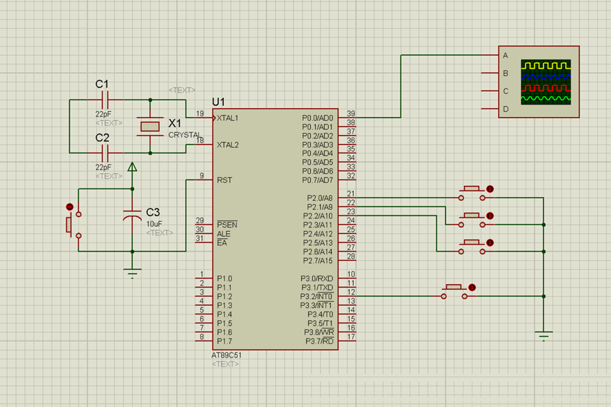
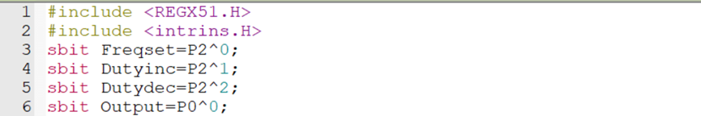
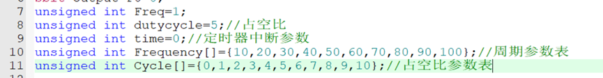
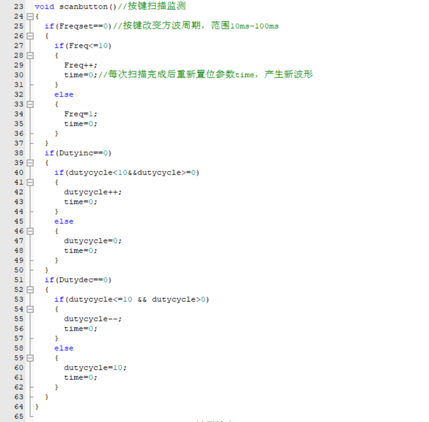
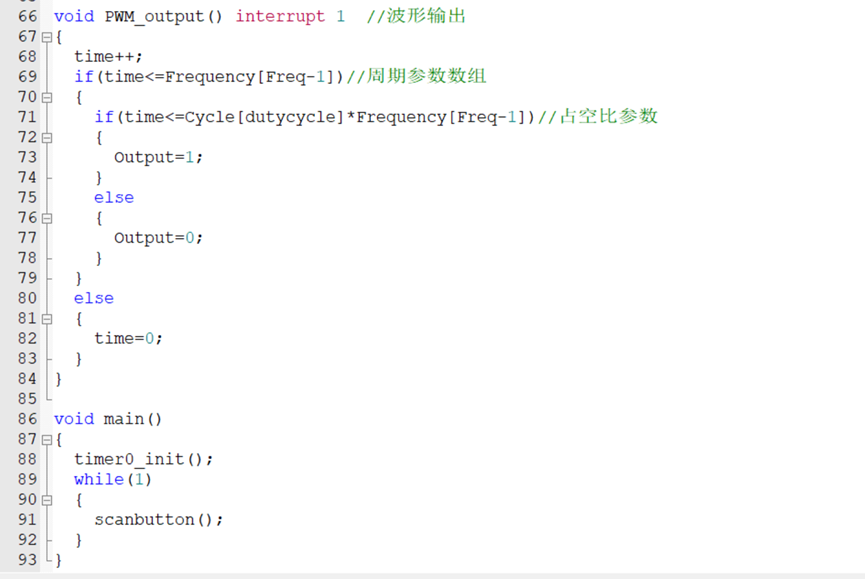

波形发生器设计实验
一． 实验目的
学习定时器的工作模式，掌握定时器工作模式的配置方式、工作状态的控制以及对应中断的控制。
二． 实验原理
方波以及PWM波形的产生：
通过定时翻转I/O口可以产生一定周期的方波，修改翻转的时间间隔即可实现不同频率的方波波形。PWM波建立在方波的基础上，修改每个周期中高电平所占时间比例即可产生相应的PWM波。同时PWM波也作为一种驱动手段广泛地应用在直流电机、舵机、无源蜂鸣器等外设的使用中。
I/O口扫描：
当I/O口作为输入口时，往往需要动态地反馈采集到的外部数据，为了实时接收数据并让CPU快速响应，通常会采用扫描的方式，以极短的时间间隔重复读取I/O口的数值并做出判断。
三． 实验要求
- 能够产生不同频率方波，可通过按钮改变周期
- PWM波，按钮调速（定时器+中断完成），改变占空比
- 运放功能，正弦波，等等 （拓展结合AD/DA）
- 将上述要求设计合理的操作界面（控制方式设计）
注：本实验所设计的波形并不要求能实现连续变化，即完成一定范围内波形的离散变化即可
四． 实验参考
如图，通过P2.0设置方波周期，P2.1、P2.2分别控制占空比的增减，外部中断0实现整体程序复位，恢复默认波形，重置所有参数。
程序示例：
//定义按键
//参数设置，定义初始参数周期和占空比参数表，而Freq,dutycycle作为数组指针，将周期和占空比分成十份。

//0.1ms倒计时定时器0初始化，每0.1ms参数time+1，
//扫描按键，每个按键对应了10个档位的调节
//主程序
评论区